1. In order to blend images, we will need to find photographs that the transforms between them are projective. For example:
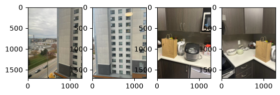
2. First we need to write a method to find the homographies matrix based on corresponding points. The matrix will be used to warp the images in the next step. Implementation of computeH() can be found in code.ipynb, with an example of calculation of H matrix required to rectify a window captured at an oblique angle:
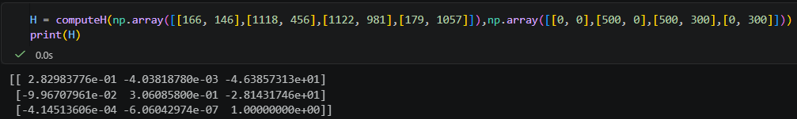
3. We can now use this homography to warp each image towards the reference image, using either NearestNeighbor or Bilinear.
I use pixspy.com to mark the 4 vertices of the objects (the window and the paper bag in the following 2 examples) and reorient them so they are facing the camera.
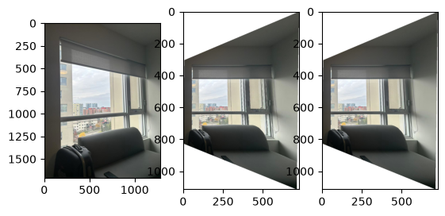
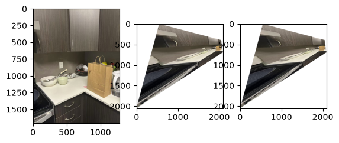
I tried to turn the paper bag into a rectangle in the second example, so it has a very large range of stretch and pushes the rectangle paper bag to the edge.
We can also see that images using Bilinear appear smoother and more natural, so we will use Bilinear for the rest of this assignment.
4. Now we have everything to blend 2 images. Note that images cannot be aligned well if all the points are concentrated in one place.
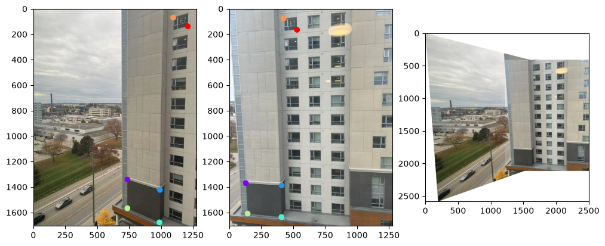
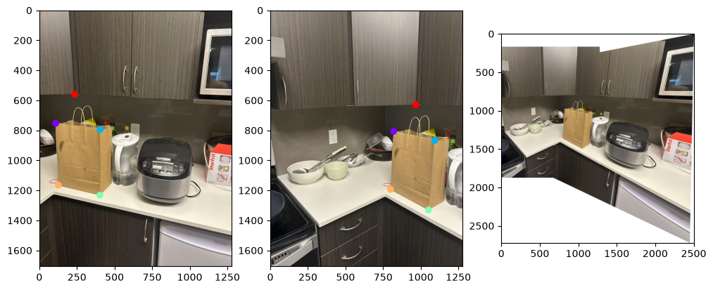
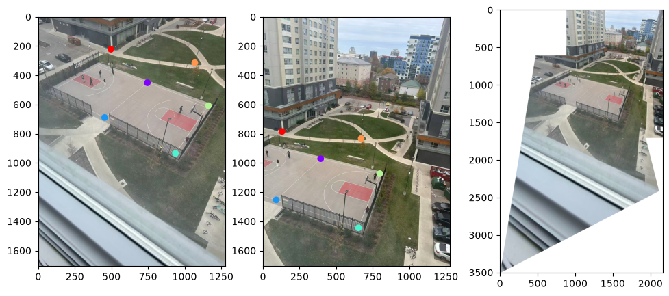
1. Marking points manually can be a hassle, so let’s automate it. First we need to implement Harris Interest Point Detector and ANMS. We can see that harris.get_harris_corners can only scan the entire image to identify all potential corner points, so we need to apply ANMS for downsampling.
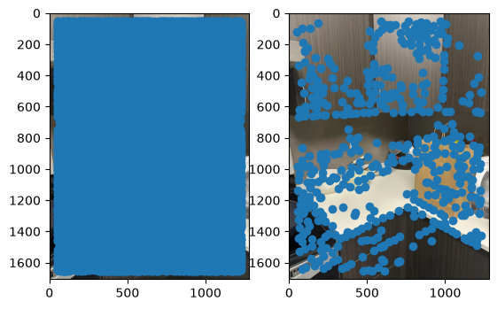
2. The next step is to implement Feature Descriptor extraction and extract normalized 8x8 feature descriptors as the following:
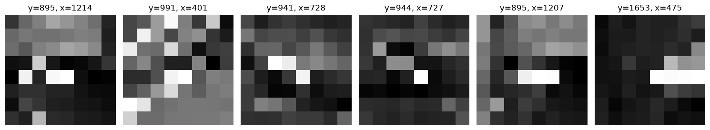
3. Now we need to find pairs that are potential good matches.
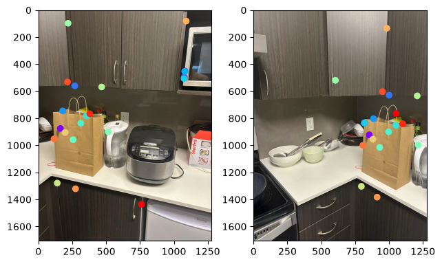
4. We can see many matches, but a large amount of erroneous data still exists, so it is time to use RANSAC.
The matching points are perfect. We can finally blend images automatically.
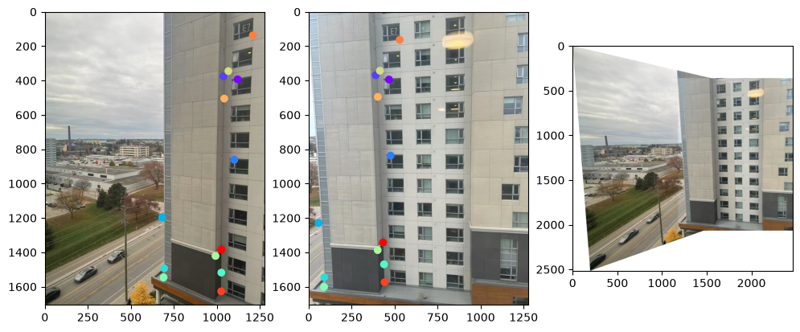
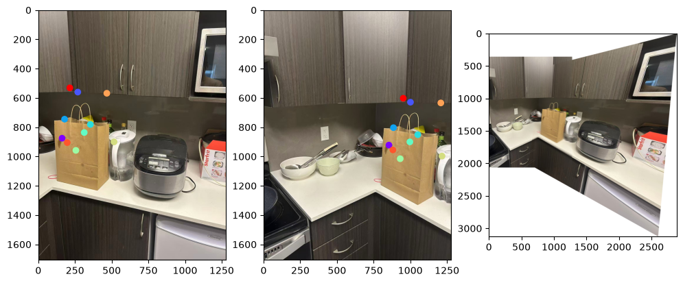
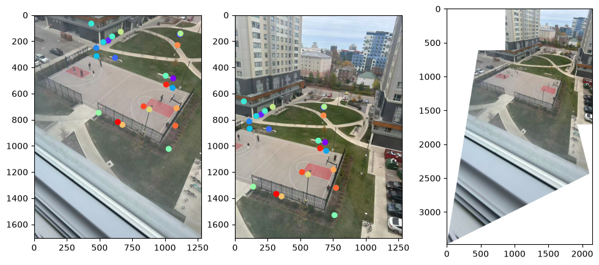